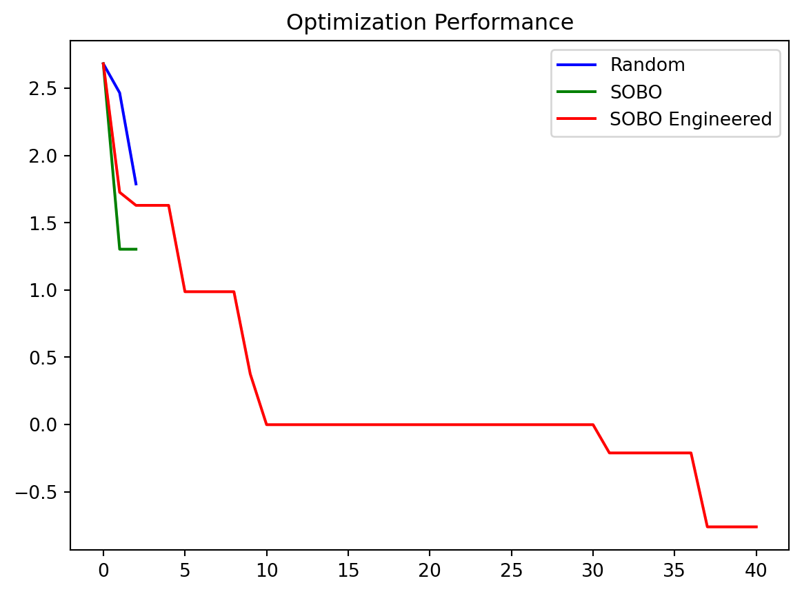

import pandas as pd
import os
import matplotlib.pyplot as plt
import numpy as np
from bofire.data_models.features.api import ContinuousInput, ContinuousDescriptorInput, SumFeature, WeightedSumFeature, ContinuousOutput
from bofire.data_models.domain.api import Inputs, EngineeredFeatures, Outputs, Domain, Constraints
from bofire.benchmarks.api import Himmelblau, FormulationWrapper
from bofire.runners.api import run
from bofire.strategies.api import RandomStrategy, SoboStrategy
from bofire.data_models.surrogates.api import SingleTaskGPSurrogate
import bofire.surrogates.api as surrogates
from bofire.data_models.surrogates.api import BotorchSurrogates
from typing import Optional
SMOKE_TEST = os.environ.get("SMOKE_TEST")Optimization with ContinuousDescriptorInputs and engineered Features
Continuous descriptor inputs can be used in combination with engineered features to incorporate more domain knowledge into an optimization. Example could be a solvent of formulation optimization where per continuous input feature additional information about its properties is available.
For examples in the literature have a look at this paper.
Imports
Problem Setup
For demo purposes, the formulation wrapper is used around the two dimensional Himmelblau Benchmark to wrap it as a formulation problem with 7 features in total. Per original feature, three new features are introduced and one filler feature. The sum of each feature group is used as (normalized) input for the evaluation of the original Himmelblau function. A seventh feature is introduced as filler to always reach a total of 1 to fulfill the formulation/equality constraint. For more information on this setup have a look at the docstring of FormulationWrapper.
bench = FormulationWrapper(benchmark=Himmelblau(), n_features_per_original_feature=3, n_filler_features=1)The continuos descriptor features have the following descriptor values for the descriptors x_1 and x_2:
pd.concat([feat.to_df() for feat in bench.domain.inputs.get(ContinuousDescriptorInput)])| x_1 | x_2 | |
|---|---|---|
| x_1_0 | 1.0 | 0.0 |
| x_1_1 | 1.0 | 0.0 |
| x_1_2 | 1.0 | 0.0 |
| x_2_0 | 0.0 | 1.0 |
| x_2_1 | 0.0 | 1.0 |
| x_2_2 | 0.0 | 1.0 |
Benchmarks
Random Strategy
As baseline, we run the random strategy on the problem.
def sample(domain):
strategy = RandomStrategy.make(domain=domain)
return strategy.ask(10)
def best(domain: Domain, experiments: pd.DataFrame) -> float:
return experiments.y.min()
random_results = []
for _ in range(15 if not SMOKE_TEST else 1):
results = run(
benchmark=bench,
strategy_factory=lambda domain: RandomStrategy.make(domain=domain),
n_iterations=40 if not SMOKE_TEST else 2,
metric=best,
initial_sampler=sample,
n_runs=1,
n_procs=1,
)
random_results.append(results[0][0]) 0%| | 0/2 [00:00<?, ?it/s]Run 0: 0%| | 0/2 [00:00<?, ?it/s]Run 0: 0%| | 0/2 [00:00<?, ?it/s, Current Best:=5.338]Run 0: 50%|█████ | 1/2 [00:00<00:00, 9.93it/s, Current Best:=5.338]Run 0: 50%|█████ | 1/2 [00:00<00:00, 9.93it/s, Current Best:=5.338]Run 0: 50%|█████ | 1/2 [00:00<00:00, 9.93it/s, Current Best:=5.338]Run 0: 100%|██████████| 2/2 [00:00<00:00, 9.95it/s, Current Best:=5.338]Run 0: 100%|██████████| 2/2 [00:00<00:00, 9.92it/s, Current Best:=5.338]Sobo Strategy
Next we run the SoboStrategy on the problem.
def sample(domain):
return initial_experiments[domain.inputs.get_keys()].copy()
def best(domain: Domain, experiments: pd.DataFrame) -> float:
return experiments.y.min()
sobo_results = []
for i in range(15 if not SMOKE_TEST else 1):
initial_experiments = random_results[i][:10].copy()
results = run(
benchmark=bench,
strategy_factory=lambda domain: SoboStrategy.make(domain=domain),
n_iterations=40 if not SMOKE_TEST else 2,
metric=best,
initial_sampler=sample,
n_runs=1,
n_procs=1,
)
sobo_results.append(results[0][0]) 0%| | 0/2 [00:00<?, ?it/s]Run 0: 0%| | 0/2 [00:05<?, ?it/s]Run 0: 0%| | 0/2 [00:05<?, ?it/s, Current Best:=5.338]Run 0: 50%|█████ | 1/2 [00:05<00:05, 5.53s/it, Current Best:=5.338]Run 0: 50%|█████ | 1/2 [00:09<00:05, 5.53s/it, Current Best:=5.338]Run 0: 50%|█████ | 1/2 [00:09<00:05, 5.53s/it, Current Best:=5.338]Run 0: 100%|██████████| 2/2 [00:09<00:00, 4.82s/it, Current Best:=5.338]Run 0: 100%|██████████| 2/2 [00:09<00:00, 4.93s/it, Current Best:=5.338]Now we run the SoboStrategy again, but with an engineered feature as additional input. The WeightedSumFeature computes the sum over the specified descriptors weighted by the values of the involved original features.
def create_strategy(domain):
surrogate_data = SingleTaskGPSurrogate(
inputs=domain.inputs,
outputs=domain.outputs,
engineered_features=EngineeredFeatures(
features=[
WeightedSumFeature(
key="WeightedSum",
features=bench.domain.inputs.get_keys(ContinuousDescriptorInput),
descriptors=["x_1", "x_2"]
)]),
#kernel=RBFKernel(features=["x_1", "x_2"], lengthscale_prior=HVARFNER_LENGTHSCALE_PRIOR())
)
return SoboStrategy.make(domain=domain, surrogate_specs=BotorchSurrogates(surrogates=[surrogate_data]))
sobo_engineered_results_all = []
for i in range(15 if not SMOKE_TEST else 1):
initial_experiments = random_results[i][:10].copy()
results = run(
benchmark=bench,
strategy_factory=create_strategy,
n_iterations=40,
metric=best,
initial_sampler=sample,
n_runs=1,
n_procs=1,
)
sobo_engineered_results_all.append(results[0][0])/opt/hostedtoolcache/Python/3.12.12/x64/lib/python3.12/site-packages/bofire/surrogates/engineered_features.py:60: UserWarning:
Creating a tensor from a list of numpy.ndarrays is extremely slow. Please consider converting the list to a single numpy.ndarray with numpy.array() before converting to a tensor. (Triggered internally at /pytorch/torch/csrc/utils/tensor_new.cpp:253.)
0%| | 0/40 [00:00<?, ?it/s]Run 0: 0%| | 0/40 [00:05<?, ?it/s]Run 0: 0%| | 0/40 [00:05<?, ?it/s, Current Best:=5.338]Run 0: 2%|▎ | 1/40 [00:05<03:48, 5.87s/it, Current Best:=5.338]Run 0: 2%|▎ | 1/40 [00:13<03:48, 5.87s/it, Current Best:=5.338]Run 0: 2%|▎ | 1/40 [00:13<03:48, 5.87s/it, Current Best:=5.338]Run 0: 5%|▌ | 2/40 [00:13<04:17, 6.76s/it, Current Best:=5.338]Run 0: 5%|▌ | 2/40 [00:18<04:17, 6.76s/it, Current Best:=5.338]Run 0: 5%|▌ | 2/40 [00:18<04:17, 6.76s/it, Current Best:=5.338]Run 0: 8%|▊ | 3/40 [00:18<03:50, 6.23s/it, Current Best:=5.338]Run 0: 8%|▊ | 3/40 [00:22<03:50, 6.23s/it, Current Best:=5.338]Run 0: 8%|▊ | 3/40 [00:22<03:50, 6.23s/it, Current Best:=5.338]Run 0: 10%|█ | 4/40 [00:22<03:14, 5.40s/it, Current Best:=5.338]Run 0: 10%|█ | 4/40 [00:29<03:14, 5.40s/it, Current Best:=5.338]Run 0: 10%|█ | 4/40 [00:29<03:14, 5.40s/it, Current Best:=5.338]Run 0: 12%|█▎ | 5/40 [00:29<03:18, 5.68s/it, Current Best:=5.338]Run 0: 12%|█▎ | 5/40 [00:36<03:18, 5.68s/it, Current Best:=5.338]Run 0: 12%|█▎ | 5/40 [00:36<03:18, 5.68s/it, Current Best:=2.308]Run 0: 15%|█▌ | 6/40 [00:36<03:30, 6.20s/it, Current Best:=2.308]Run 0: 15%|█▌ | 6/40 [00:42<03:30, 6.20s/it, Current Best:=2.308]Run 0: 15%|█▌ | 6/40 [00:42<03:30, 6.20s/it, Current Best:=2.308]Run 0: 18%|█▊ | 7/40 [00:42<03:22, 6.12s/it, Current Best:=2.308]Run 0: 18%|█▊ | 7/40 [00:48<03:22, 6.12s/it, Current Best:=2.308]Run 0: 18%|█▊ | 7/40 [00:48<03:22, 6.12s/it, Current Best:=2.308]Run 0: 20%|██ | 8/40 [00:48<03:13, 6.06s/it, Current Best:=2.308]Run 0: 20%|██ | 8/40 [00:53<03:13, 6.06s/it, Current Best:=2.308]Run 0: 20%|██ | 8/40 [00:53<03:13, 6.06s/it, Current Best:=2.308]Run 0: 22%|██▎ | 9/40 [00:53<03:01, 5.87s/it, Current Best:=2.308]Run 0: 22%|██▎ | 9/40 [00:59<03:01, 5.87s/it, Current Best:=2.308]Run 0: 22%|██▎ | 9/40 [00:59<03:01, 5.87s/it, Current Best:=2.308]Run 0: 25%|██▌ | 10/40 [00:59<02:56, 5.87s/it, Current Best:=2.308]Run 0: 25%|██▌ | 10/40 [01:05<02:56, 5.87s/it, Current Best:=2.308]Run 0: 25%|██▌ | 10/40 [01:05<02:56, 5.87s/it, Current Best:=2.308]Run 0: 28%|██▊ | 11/40 [01:05<02:46, 5.74s/it, Current Best:=2.308]Run 0: 28%|██▊ | 11/40 [01:10<02:46, 5.74s/it, Current Best:=2.308]Run 0: 28%|██▊ | 11/40 [01:10<02:46, 5.74s/it, Current Best:=2.308]Run 0: 30%|███ | 12/40 [01:10<02:36, 5.59s/it, Current Best:=2.308]Run 0: 30%|███ | 12/40 [01:16<02:36, 5.59s/it, Current Best:=2.308]Run 0: 30%|███ | 12/40 [01:16<02:36, 5.59s/it, Current Best:=2.308]Run 0: 32%|███▎ | 13/40 [01:16<02:35, 5.78s/it, Current Best:=2.308]Run 0: 32%|███▎ | 13/40 [01:22<02:35, 5.78s/it, Current Best:=2.308]Run 0: 32%|███▎ | 13/40 [01:22<02:35, 5.78s/it, Current Best:=2.308]Run 0: 35%|███▌ | 14/40 [01:22<02:32, 5.87s/it, Current Best:=2.308]Run 0: 35%|███▌ | 14/40 [01:27<02:32, 5.87s/it, Current Best:=2.308]Run 0: 35%|███▌ | 14/40 [01:27<02:32, 5.87s/it, Current Best:=2.308]Run 0: 38%|███▊ | 15/40 [01:27<02:22, 5.70s/it, Current Best:=2.308]Run 0: 38%|███▊ | 15/40 [01:34<02:22, 5.70s/it, Current Best:=2.308]Run 0: 38%|███▊ | 15/40 [01:34<02:22, 5.70s/it, Current Best:=2.308]Run 0: 40%|████ | 16/40 [01:34<02:22, 5.94s/it, Current Best:=2.308]Run 0: 40%|████ | 16/40 [01:40<02:22, 5.94s/it, Current Best:=2.308]Run 0: 40%|████ | 16/40 [01:40<02:22, 5.94s/it, Current Best:=2.308]Run 0: 42%|████▎ | 17/40 [01:40<02:16, 5.92s/it, Current Best:=2.308]Run 0: 42%|████▎ | 17/40 [01:45<02:16, 5.92s/it, Current Best:=2.308]Run 0: 42%|████▎ | 17/40 [01:45<02:16, 5.92s/it, Current Best:=2.308]Run 0: 45%|████▌ | 18/40 [01:45<02:06, 5.76s/it, Current Best:=2.308]Run 0: 45%|████▌ | 18/40 [01:51<02:06, 5.76s/it, Current Best:=2.308]Run 0: 45%|████▌ | 18/40 [01:51<02:06, 5.76s/it, Current Best:=2.308]Run 0: 48%|████▊ | 19/40 [01:51<02:03, 5.88s/it, Current Best:=2.308]Run 0: 48%|████▊ | 19/40 [01:58<02:03, 5.88s/it, Current Best:=2.308]Run 0: 48%|████▊ | 19/40 [01:58<02:03, 5.88s/it, Current Best:=2.308]Run 0: 50%|█████ | 20/40 [01:58<01:59, 5.99s/it, Current Best:=2.308]Run 0: 50%|█████ | 20/40 [02:04<01:59, 5.99s/it, Current Best:=2.308]Run 0: 50%|█████ | 20/40 [02:04<01:59, 5.99s/it, Current Best:=2.308]Run 0: 52%|█████▎ | 21/40 [02:04<01:57, 6.16s/it, Current Best:=2.308]Run 0: 52%|█████▎ | 21/40 [02:10<01:57, 6.16s/it, Current Best:=2.308]Run 0: 52%|█████▎ | 21/40 [02:10<01:57, 6.16s/it, Current Best:=2.308]Run 0: 55%|█████▌ | 22/40 [02:10<01:48, 6.04s/it, Current Best:=2.308]Run 0: 55%|█████▌ | 22/40 [02:16<01:48, 6.04s/it, Current Best:=2.308]Run 0: 55%|█████▌ | 22/40 [02:16<01:48, 6.04s/it, Current Best:=2.308]Run 0: 57%|█████▊ | 23/40 [02:16<01:42, 6.04s/it, Current Best:=2.308]Run 0: 57%|█████▊ | 23/40 [02:23<01:42, 6.04s/it, Current Best:=2.308]Run 0: 57%|█████▊ | 23/40 [02:23<01:42, 6.04s/it, Current Best:=2.308]Run 0: 60%|██████ | 24/40 [02:23<01:39, 6.24s/it, Current Best:=2.308]Run 0: 60%|██████ | 24/40 [02:29<01:39, 6.24s/it, Current Best:=2.308]Run 0: 60%|██████ | 24/40 [02:29<01:39, 6.24s/it, Current Best:=2.308]Run 0: 62%|██████▎ | 25/40 [02:29<01:35, 6.35s/it, Current Best:=2.308]Run 0: 62%|██████▎ | 25/40 [02:35<01:35, 6.35s/it, Current Best:=2.308]Run 0: 62%|██████▎ | 25/40 [02:35<01:35, 6.35s/it, Current Best:=2.308]Run 0: 65%|██████▌ | 26/40 [02:35<01:26, 6.21s/it, Current Best:=2.308]Run 0: 65%|██████▌ | 26/40 [02:41<01:26, 6.21s/it, Current Best:=2.308]Run 0: 65%|██████▌ | 26/40 [02:41<01:26, 6.21s/it, Current Best:=2.308]Run 0: 68%|██████▊ | 27/40 [02:41<01:18, 6.05s/it, Current Best:=2.308]Run 0: 68%|██████▊ | 27/40 [02:47<01:18, 6.05s/it, Current Best:=2.308]Run 0: 68%|██████▊ | 27/40 [02:47<01:18, 6.05s/it, Current Best:=2.308]Run 0: 70%|███████ | 28/40 [02:47<01:12, 6.02s/it, Current Best:=2.308]Run 0: 70%|███████ | 28/40 [02:53<01:12, 6.02s/it, Current Best:=2.308]Run 0: 70%|███████ | 28/40 [02:53<01:12, 6.02s/it, Current Best:=2.308]Run 0: 72%|███████▎ | 29/40 [02:53<01:07, 6.13s/it, Current Best:=2.308]Run 0: 72%|███████▎ | 29/40 [02:59<01:07, 6.13s/it, Current Best:=2.308]Run 0: 72%|███████▎ | 29/40 [02:59<01:07, 6.13s/it, Current Best:=2.308]Run 0: 75%|███████▌ | 30/40 [02:59<01:00, 6.02s/it, Current Best:=2.308]Run 0: 75%|███████▌ | 30/40 [03:06<01:00, 6.02s/it, Current Best:=2.308]Run 0: 75%|███████▌ | 30/40 [03:06<01:00, 6.02s/it, Current Best:=2.308]Run 0: 78%|███████▊ | 31/40 [03:06<00:57, 6.36s/it, Current Best:=2.308]Run 0: 78%|███████▊ | 31/40 [03:12<00:57, 6.36s/it, Current Best:=2.308]Run 0: 78%|███████▊ | 31/40 [03:12<00:57, 6.36s/it, Current Best:=2.308]Run 0: 80%|████████ | 32/40 [03:12<00:49, 6.13s/it, Current Best:=2.308]Run 0: 80%|████████ | 32/40 [03:18<00:49, 6.13s/it, Current Best:=2.308]Run 0: 80%|████████ | 32/40 [03:18<00:49, 6.13s/it, Current Best:=2.308]Run 0: 82%|████████▎ | 33/40 [03:18<00:42, 6.09s/it, Current Best:=2.308]Run 0: 82%|████████▎ | 33/40 [03:24<00:42, 6.09s/it, Current Best:=2.308]Run 0: 82%|████████▎ | 33/40 [03:24<00:42, 6.09s/it, Current Best:=2.009]Run 0: 85%|████████▌ | 34/40 [03:24<00:36, 6.10s/it, Current Best:=2.009]Run 0: 85%|████████▌ | 34/40 [03:31<00:36, 6.10s/it, Current Best:=2.009]Run 0: 85%|████████▌ | 34/40 [03:31<00:36, 6.10s/it, Current Best:=2.009]Run 0: 88%|████████▊ | 35/40 [03:31<00:32, 6.48s/it, Current Best:=2.009]Run 0: 88%|████████▊ | 35/40 [03:36<00:32, 6.48s/it, Current Best:=2.009]Run 0: 88%|████████▊ | 35/40 [03:36<00:32, 6.48s/it, Current Best:=2.009]Run 0: 90%|█████████ | 36/40 [03:36<00:24, 6.15s/it, Current Best:=2.009]Run 0: 90%|█████████ | 36/40 [03:43<00:24, 6.15s/it, Current Best:=2.009]Run 0: 90%|█████████ | 36/40 [03:43<00:24, 6.15s/it, Current Best:=2.009]Run 0: 92%|█████████▎| 37/40 [03:43<00:18, 6.27s/it, Current Best:=2.009]Run 0: 92%|█████████▎| 37/40 [03:49<00:18, 6.27s/it, Current Best:=2.009]Run 0: 92%|█████████▎| 37/40 [03:49<00:18, 6.27s/it, Current Best:=2.009]Run 0: 95%|█████████▌| 38/40 [03:49<00:12, 6.17s/it, Current Best:=2.009]Run 0: 95%|█████████▌| 38/40 [03:55<00:12, 6.17s/it, Current Best:=2.009]Run 0: 95%|█████████▌| 38/40 [03:55<00:12, 6.17s/it, Current Best:=2.009]Run 0: 98%|█████████▊| 39/40 [03:55<00:06, 6.06s/it, Current Best:=2.009]Run 0: 98%|█████████▊| 39/40 [04:01<00:06, 6.06s/it, Current Best:=2.009]Run 0: 98%|█████████▊| 39/40 [04:01<00:06, 6.06s/it, Current Best:=2.009]Run 0: 100%|██████████| 40/40 [04:01<00:00, 5.98s/it, Current Best:=2.009]Run 0: 100%|██████████| 40/40 [04:01<00:00, 6.03s/it, Current Best:=2.009]Plot the performance
Next we plot the performance. Using the engineered features shows a clear benefit. Using a SAAS model on it would lead to even better results, as only two features are needed and SAAS models are very good in figuring out the features of interest.
def get_padded_trajectories(dfs: list[pd.DataFrame]) -> np.ndarray:
trajectories = []
for df in dfs:
y_values = [df.y[:10].max()] + df.y[10:].tolist()
cummin = np.minimum.accumulate(np.log10(y_values))
trajectories.append(np.array(cummin))
max_len = max(len(t) for t in trajectories)
return [np.pad(traj, (0, max_len-len(traj)), mode='edge') for traj in trajectories]
fig, ax = plt.subplots()
random_trajectories = get_padded_trajectories(random_results)
std_random = np.std(random_trajectories, axis=0)
mean_random = np.mean(random_trajectories, axis=0)
sem_random = std_random / np.sqrt(len(random_trajectories))
ax.plot(mean_random, label='Random', color='blue')
ax.fill_between(range(len(mean_random)), mean_random - sem_random, mean_random + sem_random, color='blue', alpha=0.2)
sobo_trajectories = get_padded_trajectories(sobo_results)
std_sobo = np.std(sobo_trajectories, axis=0)
mean_sobo = np.mean(sobo_trajectories, axis=0)
sem_sobo = std_sobo / np.sqrt(len(sobo_trajectories))
ax.plot(mean_sobo, label='SOBO', color='green')
ax.fill_between(range(len(mean_sobo)), mean_sobo - sem_sobo, mean_sobo + sem_sobo, color='green', alpha=0.2)
sobo_engineered_trajectories = get_padded_trajectories(sobo_engineered_results_all)
std_sobo_engineered = np.std(sobo_engineered_trajectories, axis=0)
mean_sobo_engineered = np.mean(sobo_engineered_trajectories, axis=0)
sem_sobo_engineered = std_sobo_engineered / np.sqrt(len(sobo_engineered_trajectories))
ax.plot(mean_sobo_engineered, label='SOBO Engineered', color='red')
ax.fill_between(range(len(mean_sobo_engineered)), mean_sobo_engineered - sem_sobo_engineered, mean_sobo_engineered + sem_sobo_engineered, color='red', alpha=0.2)
ax.set_title('Optimization Performance')
ax.legend()
plt.show()